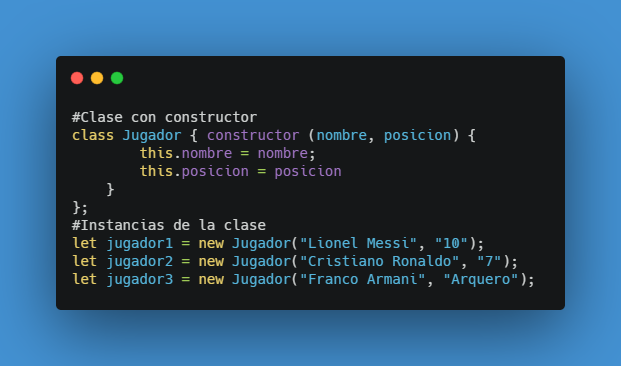
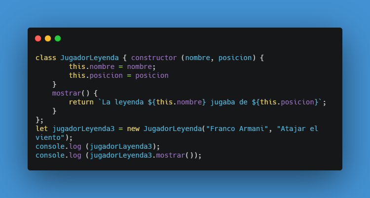
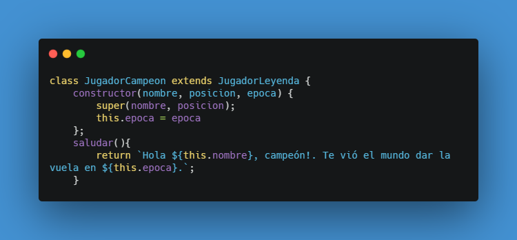
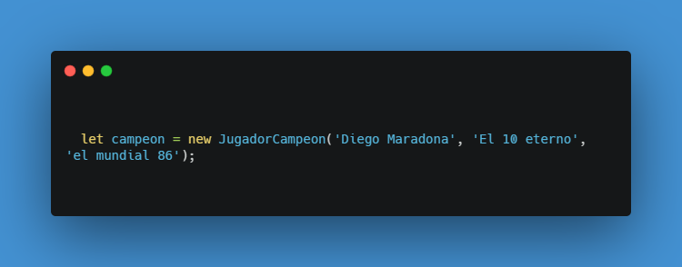

Anteriormente vimos qué es un objeto, cómo se accede a cada elemento.
En esta parte vamos a declarar una clase e instanciar objetos con el constructor.
En el ejemplo se crea la clase jugador y con el constructor se crea cada instancia. En este caso vamos a tener 3 jugadores y cada uno tiene dos atributos, el nombre y la pasición. en los links de arriba podemos recordar el manejo de objetos.
Creamos otra clase que además de los atributos, contenga un método. Por consola podemos ver el método desplegando la estructura y fijándose en Prototypes o bien llamar al método como en la imagen.
También existe la herencia, veamos la sintaxis
Observar que nombre y posición son atributos heredados de la clase jugador por eso aparece el super(nombre, posicion). Luego se puede generar una instancia de la clase creada
Luego puedo acceder a el método y qeda así: "Hola Diego Maradona, campeón!. Te vió el mundo dar la vuelta en el mundial 86."